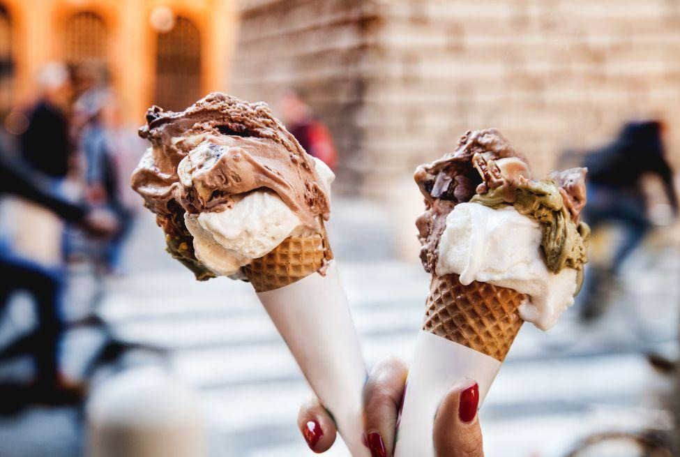

Europe is renowned as one of the world's best destinations for food lovers. European cuisine has a long history and is influenced by local culture, traditions, and ingredients. Discover where locals go to eat and hear the stories behind each dish. In Italy, food is more than just a meal, but part of your identity and way of life

Nowadays streets are full of food trucks, kiosks and stands where food is the real protagonist. In Italy, there are many symbols of street foods, from the North to the South: pizza, pane and panelle, bread with milza, lampredotto, cuoppo and so on.
Detail
The key to understanding the history and culture of any country can usually be found in its cuisine, which is why eating the street food in Italy is one of favorite things to do. It’s the ultimate window into something deeper. Some food travelers to Italy choose to try..
Read More
A food historian has kicked up controversy after claiming that there is ‘no such thing’ as Italian cuisine, sparking debate over the origins and ownership of food. But perhaps we should reconsider our ideas about..
Detail
Here are our 17 best Italian recipes that include Italian veg dishes, Italian pasta recipes, Italian pizza recipes, Italian salad, Italian desserts and Italian bread recipes. It can reveal the smallest,subtle secrets as well.
Read Morefood in italy
Italian food is among the world's oldest and most culturally rich culinary traditions. It plays a vital role in shaping European gastronomy. Italy's signature dishes embody the essence of tradition and stand out for their refined and exquisite flavors. Let's embark on a journey to explore the most iconic dishes of Italian food—a perfect blend of art and unique taste.Yes, Italian food is an absolute dream, and there are certain popular dishes in Italy and food Italy is famous for that you just can’t leave without trying! Trying to replicate the feeling my taste buds and body had in Italy by dining at Stateside Italian restaurants has only left me unsatisfied and checking flight prices to hop my ass on a plane back to Europe.
taly is a country rich in heritage from the ancient Roman civilization and blessed by nature with abundant diverse ingredients. The people of Italy have skillfully utilized these natural resources to create unique dishes that are both simple and deeply rooted in tradition. This perfect harmony defines the distinctive charm of Italian cultures food.A lot of these dishes contained ingredients that I don’t normally care to eat, but if there’s a time to be adventurous with your appetite, it’s during travel. I had so much amazing food on my Italian vacation. Here’s a list of some of the most popular food Italy is famous for! Ready to indulge?
Copyright 2016 Eating Italy